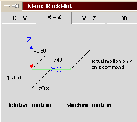

Tool length offsets are given as positive numbers in the tool table. A tool length offset is programmed using G43 Hn, where n is the desired table index. It is expected that all entries in the tool table will be positive. The H number is checked for being a non-negative integer when it is read. The interpreter behaves as follows.
1. If G43 Hn is programmed, A USE_TOOL_LENGTH_OFFSET(length) function call is made (where length is the value of the tool length offset entry in the tool table whose index is n), tool_length_offset is reset in the machine settings model, and the value of current_z in the model is adjusted. Note that n does not have to be the same as the slot number of the tool currently in the spindle.
2. If G49 is programmed, USE_TOOL_LENGTH_OFFSET(0.0) is called, tool_length_offset is reset to 0.0 in the machine settings model, and the value of current_z in the model is adjusted. The effect of tool length compensation is illustrated in the screen shot below. Notice that the length of the tool is subtracted from the z setting so that the tool tip appears at the programmed setting. You should note that the effect of tool length compensation is immediate when you view the z position as a relative coordinate but it does affect actual machine position until you program a z move.
|
Test tool length program.
Tool #1 is 1 inch long.
N01 G1 F15 X0 Y0 Z0
|
|

|
The effect of this is that in most cases the machine will pick up the offset as a ramp during the next xyz move after the g43 word.